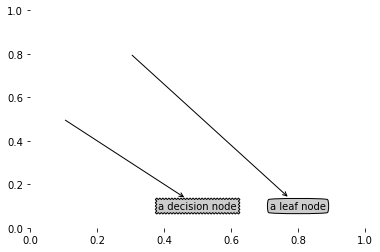

大家好，还是那句老话，这篇博客将简单通俗地介绍一个用于数据分类的Python代码。机器学习，无非就是六个步骤，
1） 收集数据（海纳百川，各现神通）
2） 准备输入数据（格式）
3） 分析输入数据（人工干预，人工分析数据，瞪眼法）
4） 训练算法（开始学习）
5） 测试算法（测试成功率，不满意可以回到4，通常是数据准备和处理有关）
6） 使用算法将机器学习转化为应用程序
仅标称数据，划分有说法，缺点容易过度匹配
我们拿非常简单的例子来说明这个基本算法，通过打游戏，购物数据判断性别
def createDataSet():
dataSet = [[1,1,'man'],
[1,1,'man'],
[1,0,'man'],
[0,1,'women'],
[0,1,'women'],
[0,0,'women']]
labels = ['play game','go shopping']
return dataSet, labels
数据的格式是列表格式，dataSet里面一个子列表对应一个样品，子列表中最后一列对应类名，前面两个特征值分别对应 “play game”与“go shopping”
既然我们要做数据分析，我们当然应该画图对数据可视化啦，这样我们就能根据图对冷冰冰的数据进行初步分析
import matplotlib
import matplotlib.pyplot as plt
fig, ax = plt.subplots()
ax.scatter([exmple[0] for exmple in myDat],
[exmple[1] for exmple in myDat],
c=['blue' if example[2] == 'man' else 'red' for example in dataSet])
这只是一个很简单的例子，数据都是我乱编的，别抬杠，我们往下走
在此之前我们先了解一个非常重要的概念，就是熵，熵就是混乱程度，世界在不断熵增，我们在不断进步。 决策树工作就是不断对样品进行分类决策，最后得到类名的过程，而衡量它的每一次分类到底有没有用，用处大不大，我们就用熵增来衡量， 分类出却多的种类，熵越高。分类效果越好
from math import log
def calcShannonEnt (dataSet):
numEntries = len(dataSet)
labelCounts = {}
for featVec in dataSet:
currentLabel = featVec[-1]
if currentLabel not in labelCounts.keys():
labelCounts[currentLabel] = 0
labelCounts[currentLabel] += 1
shannonEnt = 0.0
for key in labelCounts:
prob = float(labelCounts[key])/numEntries
shannonEnt -= prob * log(prob,2)
return shannonEnt
香农的熵计算的方法就是将每个类名计数，换算概率，再概率求和，越多越乱熵越高。
有了香农这个核心熵的理论后，我们就可以来构建决策树了，给你一个数据集，选一个特征值，按照这个特征值来划分， 看看熵增，一个个特征值这样单独算熵增，最高的就是最佳特征，就按照其划分，以此类推最后划分完毕，树就建成了。
def chooseBestFeatureToSplit(dataSet):
numFeatures = len(dataSet[0]) - 1
baseEntroy = calcShannonEnt(dataSet)
bestinfoGain = 0.0
bestFeature = -1
for i in range(numFeatures):
featList = [example[i] for example in dataSet]
uniqueVals = set(featList)
newEntropy = 0.0
for value in uniqueVals:
subDataSet = splitDataSet(dataSet, i, value)
prob = len(subDataSet)/float(len(dataSet))
newEntropy += prob * calcShannonEnt(subDataSet)
infoGain = baseEntroy - newEntropy
if (infoGain > bestFeature):
bestinfoGain = infoGain
bestFeature = i
return bestFeature
def splitDataSet(dataSet, axis, value):
retDataSet=[]
for featVec in dataSet:
if featVec[axis] == value:
reduceFeatVec = featVec[0:axis]
reduceFeatVec += featVec[axis+1:]
retDataSet.append(reduceFeatVec)
return retDataSet
import operator
def majorityCnt(classList):
classCount = {}
for vote in classList:
if vote not in classCount.keys():
classCounts[vote] = 0
classCounts[vote] += 1
sortedClassCount = sorted(classCount.items(),key=operator.itemgetter(1),reverse=True)
return sortedClassCount[0][0]
def createTree(dataSet, labels):
classList = [example[-1] for example in dataSet]
if classList.count(classList[0]) == len(classList):
return classList[0]
if len (dataSet[0]) == 1:#特征值消耗完毕，只剩下分类名
return majorityCnt(classList)
bestFeat = chooseBestFeatureToSplit(dataSet)
bestFeatLabel = labels[bestFeat]
myTree = {bestFeatLabel:{}}#不断迭代
del(labels[bestFeat])
featValues = [example[bestFeat] for example in dataSet]
uniqueVals = set(featValues)
for value in uniqueVals:
subLabels = labels[:]
myTree[bestFeatLabel][value] = createTree(splitDataSet(dataSet, bestFeat, value), subLabels)
return myTree
这里要特别主要的一点是，你每一次的划分都是根据一个label来的，划分完会消耗一个特征值和特征标签，最后分到没有特征值后，按投票的形式， 票选这一堆数据是什么类型
myDat, labels = createDataSet()
myTree = createTree(myDat,labels)
myTree
#得到决策树：{'go shopping': {0: 'women', 1: {'play game': {0: 'women', 1: 'man'}}}}
测试树就不测试了，直接可视化决策树，这样更直观。
这里就不得不提画树的原理了，这里用到matplotlib.pyplot函数，你给他一个坐标和文本他就可以，在图上画出线段，这个就是画画的基础哇 ，有兴趣可以用来画画哈。
import matplotlib.pyplot as plt
decisionNode = dict(boxstyle = "sawtooth", fc = "0.8")
leafNode = dict(boxstyle="round4", fc="0.8")
arrow_args = dict(arrowstyle = "<-")
def plotNode(nodeTxt, centerPt, parentPt, nodeType):
createPlot.ax1.annotate(nodeTxt, xy = parentPt,xycoords = "axes fraction", xytext = centerPt,
textcoords = "axes fraction", va = "center", ha = "center", bbox = nodeType,
arrowprops = arrow_args)
def createPlot():
fig = plt.figure(1, facecolor="white")
fig.clf()
createPlot.ax1 = plt.subplot(111, frameon = False)
plotNode("a decision node", (0.5, 0.1), (0.1, 0.5), decisionNode)
plotNode("a leaf node", (0.8, 0.1), (0.3, 0.8), leafNode)
plt.show()
createPlot()

画树之前我们要先拿画纸，要多大的画纸，大概多大的画作，我们要先计算，这里我们要计算叶子的数目和树的高度。 这样我们到时候画的时候心里就有底了。这个递归函数数据结构学过
def getNumLeafs(myTree):
numLeafs = 0
firstStr = list(myTree.keys())[0]
secondDict = myTree[firstStr]
for key in secondDict.keys():
if type(secondDict[key]).__name__ == 'dict':
numLeafs += getNumLeafs(secondDict[key])
else: numLeafs += 1
return numLeafs
def getTreeDepth(myTree):
maxDepth = 0
firstStr = list(myTree.keys())[0]
secondDict = myTree[firstStr]
for key in secondDict.keys():
if type(secondDict[key]).__name__ == 'dict':
thisDepth = 1 + getTreeDepth(secondDict[key])
else: thisDepth = 1
if thisDepth > maxDepth: maxDepth = thisDepth
return maxDepth
下面就是树的构建，我已经把注释做到具体详细了，希望给大家带来帮助，其实就是不断迭代，遇到子树就画子树，遇到叶子就画叶子， 然后注意一下坐标位置就可以了
import matplotlib.pyplot as plt
#属性设置
decisionNode = dict(boxstyle = "sawtooth", fc = "0.8")
leafNode = dict(boxstyle="round4", fc="0.8")
arrow_args = dict(arrowstyle = "<-")
#绘制node节点，接收文本，当前节点位置，父节点位置，节点类型
def plotNode(nodeTxt, centerPt, parentPt, nodeType):
createPlot.ax1.annotate(nodeTxt, xy = parentPt, xycoords = "axes fraction", xytext = centerPt,
textcoords = "axes fraction", va = "center", ha = "center", bbox = nodeType,
arrowprops = arrow_args)
def plotMidText(cntrPt, parentPt, txtString):# 函数用于在父节点和子节点之间的中间位置绘制文本
xMid = (parentPt[0] - cntrPt[0])/2.0 + cntrPt[0]
yMid = (parentPt[1] - cntrPt[1])/2.0 + cntrPt[1]
createPlot.ax1.text(xMid, yMid, txtString)
#函数是递归地绘制整个树的主要函数。它接受三个参数：myTree（表示当前子树的字典）、parentPt（父节点的坐标）、nodeTxt（当前节点的文本）。
def plotTree(myTree, parentPt, nodeTxt):#输入树，父节点坐标，节点信息
numLeafs = getNumLeafs(myTree)
depth = getTreeDepth(myTree)
firstStr = list(myTree.keys())[0] #第一个节点名称
cntrPt = (plotTree.xOff + (1.0 + float(numLeafs))/2.0/plotTree.totalW, plotTree.yOff) #根据当前xOff来找中间节点位置
plotMidText(cntrPt, parentPt, nodeTxt)
plotNode(firstStr, cntrPt, parentPt, decisionNode)
secondDict = myTree[firstStr]
plotTree.yOff = plotTree.yOff - 1.0/plotTree.totalD #y节点下降一个单位
for key in secondDict.keys():
if type(secondDict[key]).__name__ == 'dict':
plotTree(secondDict[key], cntrPt, str(key))
else:
plotTree.xOff = plotTree.xOff + 1.0/plotTree.totalW
plotNode(secondDict[key], (plotTree.xOff, plotTree.yOff), cntrPt, leafNode)
plotMidText((plotTree.xOff, plotTree.yOff),cntrPt, str(key))
plotTree.yOff = plotTree.yOff + 1.0/plotTree.totalD
def createPlot(inTree):#函数用于创建画布并初始化绘图参数
fig = plt.figure(1, facecolor="white")#创建一个白色背景的图形
fig.clf()
axprops = dict(xticks = [], yticks=[])#定义 axprops 字典，用于设置坐标轴属性。
createPlot.ax1 = plt.subplot(111, frameon = False, **axprops)#使用 plt.subplot() 方法创建子图，想怎么加怎么加。
plotTree.totalW = float(getNumLeafs(inTree))#计算叶子个数，用来设置图的总宽
plotTree.totalD = float(getTreeDepth(inTree))#计算深度，计算树的总深度
plotTree.xOff = -0.5/plotTree.totalW
plotTree.yOff = 1.0
plotTree(inTree, (0.5,1.0), '')#第一个把父节点是为空名，其实可以理解成inTree为子树，而这子树的父节点为Null(0.5,1.0)
plt.show()
def classify(inputTree, featLabels, testVec):
firstStr = list(inputTree.keys())[0]
secondDict = inputTree[firstStr]
featIndex = featLabels.index(firstStr)
for key in secondDict.keys():
if testVec[featIndex] == key:
if type(secondDict[key]).__name__ == 'dict':
classLabel = classify(secondDict[key], featLabels, testVec)
else: classLabel = secondDict[key]
return classLabel
一个个去找，就好像排序二叉树一样，一个个条件去找
def storeTree(inputTree, filename):
import pickle
fw = open(filename, "wb")
pickle.dump(inputTree,fw)
fw.close()
def grabTree(filename):
import pickle
fr = open(filename,'rb')
return pickle.load(fr)
# open函数不加b会导致->TypeError:must be str, not bytes
# 原因为：Python3给open函数添加了名为encoding的新参数，而这个新参数的默认值却是‘utf-8’。
#这样在文件句柄上进行read和write操作时，系统就要求开发者必须传入包含Unicode字符的实例，
#而不接受包含二进制数据的bytes实例。
#解决方法：使用二进制写入模式（‘wb’）来开启待操作文件，而不能像原来那样，采用字符写入模式（‘w’）
fr = open('lenses.txt')
lenses = [inst.strip().split('\t') for inst in fr.readlines()]
#得到数据 lenses:
[['young', 'myope', 'no', 'reduced', 'no lenses'],
['young', 'myope', 'no', 'normal', 'soft'],
['young', 'myope', 'yes', 'reduced', 'no lenses'],
['young', 'myope', 'yes', 'normal', 'hard'].....
#
lensesLabels = ['age', 'prescript', 'astigmatic', 'tearRate']
lensesTree = createTree(lenses, lensesLabels)
#得到数据 lensesTree:
{'age': {'presbyopic': {'astigmatic': {'no': {'tearRate': {'normal': {'prescript': {'myope': 'no lenses',
'hyper': 'soft'}},
'reduced': 'no lenses'}},
'yes': {'tearRate': {'normal': {'prescript': {'myope': 'hard',
'hyper': 'no lenses'}},
'reduced': 'no lenses'}}}},
'young': {'astigmatic': {'no': {'tearRate': {'normal': 'soft',
'reduced': 'no lenses'}},
'yes': {'tearRate': {'normal': 'hard', 'reduced': 'no lenses'}}}},
'pre': {'astigmatic': {'no': {'tearRate': {'normal': 'soft',
'reduced': 'no lenses'}},
'yes': {'tearRate': {'normal': {'prescript': {'myope': 'hard',
'hyper': 'no lenses'}},
'reduced': 'no lenses'}}}}}}
#
createPlot(lensesTree)